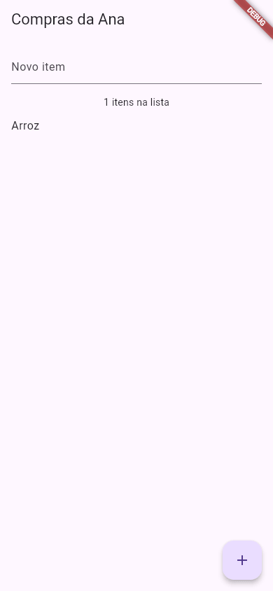

Flutter Testes de Widget
Toda vez que a Ana muda o app de compras, ela abre o celular, digita "Arroz", toca no + e confere se o item apareceu. Funciona, mas cansa, e um dia ela esquece de conferir. Um teste de widget faz essa conferência por ela: um programa pequeno que monta a tela do app sem celular nenhum, "digita", "toca" e verifica se a tela ficou como deveria. Roda em um segundo, com um comando: flutter test.
- Onde ficam os testes (
test/) e o teste que oflutter createjá traz pronto. - As quatro peças de um teste:
testWidgets,pumpWidget, os finders (find.text,find.byIcon,find.byKey…) e oexpect. - Como simular o usuário:
tap,enterTexte opumpque redesenha a tela. - Como rodar com
flutter teste ler a saída (+3: All tests passed!). - As falhas reais mais comuns e como ler a mensagem.
Todas as saídas desta página vieram do Flutter 3.47.7 (Dart 3.13.5) da máquina da Ana (usuária ana, computador notebook).
A ideia: o robô que testa o app
Imagine um robô sentado na frente do app, com uma lista de tarefas na mão: "abra o app; procure o texto 0 itens na lista; escreva Arroz no campo; toque no botão +; agora procure Arroz na lista". Se tudo o que ele procurou estava lá, o teste passou. Se algo faltou, ele anota o que procurou, o que achou e em que linha da lista de tarefas parou.
O teste de widget é exatamente essa lista de tarefas, escrita em Dart. O "robô" é o WidgetTester (o "testador de widgets"), que o pacote flutter_test entrega pronto. Ele não abre emulador nem janela: monta a árvore de widgets na memória, numa tela de mentira de 800×600, e por isso é tão rápido.
| Tipo de teste | O que confere | Precisa de aparelho? |
|---|---|---|
Unitário (test) | Uma função ou classe Dart, sem tela | Não |
De widget (testWidgets) | Um widget ou uma tela: o que aparece e o que acontece ao tocar | Não |
| De integração | O app inteiro, rodando de verdade | Sim (celular, emulador ou navegador) |
Esta aula é sobre o do meio, o mais usado no dia a dia.
1. O teste que já vem pronto
Quando você cria um projeto com flutter create (veja Criando um Projeto), ele já vem com uma pasta test/ e um arquivo dentro:
contador/ ├── lib/ │ └── main.dart « o app (o contador do +) ├── test/ │ └── widget_test.dart « o teste do app └── pubspec.yaml « já lista o flutter_test em dev_dependencies
Sem escrever nada, a Ana já pode rodar o teste. Dentro da pasta do projeto:
$ cd contador $ flutter test 00:00 +0: loading /home/ana/contador/test/widget_test.dart 00:00 +0: Counter increments smoke test 00:00 +1: All tests passed!
- 00:00
- O tempo desde o início (minutos:segundos). O teste inteiro levou menos de um segundo; o comando todo, contando a compilação, levou uns 12 segundos.
- +0, +1
- Quantos testes já passaram. Se algum falhar, aparece também
-1,-2… - loading …
- O Flutter está compilando o arquivo de teste.
- Counter increments smoke test
- O nome do teste que está rodando ("o contador aumenta: teste de fumaça", um teste rápido que só confere se o básico funciona).
- All tests passed!
- "Todos os testes passaram!" O comando termina com código 0 (sucesso).
Este é o arquivo, sem os comentários do topo:
import 'package:flutter/material.dart';
import 'package:flutter_test/flutter_test.dart';
import 'package:contador/main.dart';
void main() {
testWidgets('Counter increments smoke test', (WidgetTester tester) async {
// Build our app and trigger a frame.
await tester.pumpWidget(const MyApp());
// Verify that our counter starts at 0.
expect(find.text('0'), findsOneWidget);
expect(find.text('1'), findsNothing);
// Tap the '+' icon and trigger a frame.
await tester.tap(find.byIcon(Icons.add));
await tester.pump();
// Verify that our counter has incremented.
expect(find.text('0'), findsNothing);
expect(find.text('1'), findsOneWidget);
});
}
- import 'package:flutter_test/flutter_test.dart'
- O pacote de testes do Flutter: traz
testWidgets,find,expecte os matchers (findsOneWidget…). - import 'package:contador/main.dart'
- O seu app.
contadoré oname:dopubspec.yaml; é assim que o teste enxerga as classes delib/. - testWidgets('nome', (tester) async { … })
- Declara um teste: um nome (que aparece na saída) e uma função
asyncque recebe otester, o robô. - await tester.pumpWidget(const MyApp())
- "Bombeia" o widget para a tela de mentira: monta a árvore e desenha o primeiro quadro. É o "abrir o app".
- find.text('0')
- Um finder ("localizador"): descreve o que procurar. Aqui, widgets
Textcom o texto exato0. - expect(…, findsOneWidget)
- A verificação: "espero achar exatamente um". Se não for verdade, o teste falha nesta linha.
- await tester.tap(find.byIcon(Icons.add))
- Toca no centro do widget que tem o ícone
+. OonPressedroda, osetStateé chamado… - await tester.pump()
- … mas a tela só é redesenhada quando você pede:
pump()desenha o próximo quadro. Sem ele, a tela continua mostrando0(veja Quando dá errado).
1) monte a tela (pumpWidget) · 2) aja como o usuário (tap, enterText) e redesenhe (pump) · 3) confira (expect). Em inglês se diz arrange, act, assert.
2. Testando o app de compras da Ana
O contador é pequeno demais. Este é o app de lista de compras da Ana: um campo de texto, uma frase com a quantidade e a lista. Repare em duas coisas que vão ajudar o teste: o TextField ganhou uma chave (key: const Key('campo-item')) e o botão ganhou um tooltip.
import 'package:flutter/material.dart';
void main() => runApp(const AppCompras());
class AppCompras extends StatelessWidget {
const AppCompras({super.key});
@override
Widget build(BuildContext context) {
return const MaterialApp(
title: 'Compras da Ana',
home: TelaCompras(),
);
}
}
class TelaCompras extends StatefulWidget {
const TelaCompras({super.key});
@override
State<TelaCompras> createState() => _TelaComprasState();
}
class _TelaComprasState extends State<TelaCompras> {
final _campo = TextEditingController();
final _itens = <String>[];
void _adicionar() {
final texto = _campo.text.trim();
if (texto.isEmpty) return;
setState(() => _itens.add(texto));
_campo.clear();
}
@override
Widget build(BuildContext context) {
return Scaffold(
appBar: AppBar(title: const Text('Compras da Ana')),
body: Column(
children: [
Padding(
padding: const EdgeInsets.all(16),
child: TextField(
key: const Key('campo-item'),
controller: _campo,
decoration: const InputDecoration(labelText: 'Novo item'),
),
),
Text('${_itens.length} itens na lista'),
Expanded(
child: ListView(
children: [for (final item in _itens) ListTile(title: Text(item))],
),
),
],
),
floatingActionButton: FloatingActionButton(
onPressed: _adicionar,
tooltip: 'Adicionar',
child: const Icon(Icons.add),
),
);
}
}

A Ana apagou o widget_test.dart do contador (ele procura o MyApp, que não existe mais) e escreveu três testes num arquivo novo. O nome do arquivo tem de terminar em _test.dart: é assim que o flutter test o encontra.
import 'package:flutter/material.dart';
import 'package:flutter_test/flutter_test.dart';
import 'package:compras/main.dart';
void main() {
testWidgets('a lista começa vazia', (WidgetTester tester) async {
await tester.pumpWidget(const AppCompras());
expect(find.text('Compras da Ana'), findsOneWidget);
expect(find.text('0 itens na lista'), findsOneWidget);
expect(find.byType(ListTile), findsNothing);
});
testWidgets('digitar e tocar no + adiciona o item', (WidgetTester tester) async {
await tester.pumpWidget(const AppCompras());
await tester.enterText(find.byKey(const Key('campo-item')), 'Arroz');
await tester.tap(find.byIcon(Icons.add));
await tester.pump();
expect(find.widgetWithText(ListTile, 'Arroz'), findsOneWidget);
expect(find.text('1 itens na lista'), findsOneWidget);
});
testWidgets('campo vazio não adiciona nada', (WidgetTester tester) async {
await tester.pumpWidget(const AppCompras());
await tester.tap(find.byTooltip('Adicionar'));
await tester.pump();
expect(find.byType(ListTile), findsNothing);
});
}
- find.byType(ListTile)
- Procura pelo tipo do widget, não pelo texto. Com
findsNothing: "não pode haver nenhumListTile", ou seja, a lista está vazia. - find.byKey(const Key('campo-item'))
- Procura o widget que tem aquela chave. É o jeito mais firme de achar um widget: o texto pode mudar, a chave não.
- tester.enterText(finder, 'Arroz')
- Digita
Arrozno campo de texto achado (como se o teclado tivesse escrito). - find.widgetWithText(ListTile, 'Arroz')
- "Um
ListTileque tenha o texto Arroz dentro." Mais preciso quefind.text('Arroz'), que também acharia o texto dentro do campo, se ele não tivesse sido limpo. - find.byTooltip('Adicionar')
- Procura o widget pelo
tooltip, a dica que aparece ao segurar o dedo. Outra forma de achar o mesmo botão dobyIcon.
$ flutter test 00:00 +0: loading /home/ana/compras/test/compras_test.dart 00:00 +0: a lista começa vazia 00:00 +1: digitar e tocar no + adiciona o item 00:01 +2: campo vazio não adiciona nada 00:01 +3: All tests passed!
Três testes, três aprovados (+3), em pouco mais de um segundo. Cada testWidgets começa do zero: o item que o segundo teste adicionou não existe no terceiro.
Rodando só um teste
Com muitos testes, dá para rodar só os que têm um pedaço do nome, com --name, ou só um arquivo:
$ flutter test --name "campo vazio" 00:00 +0: loading /home/ana/compras/test/compras_test.dart 00:00 +0: campo vazio não adiciona nada 00:01 +1: All tests passed! $ flutter test test/compras_test.dart « só este arquivo
Missão: o teste da Ana procura o campo com find.byKey(const Key('campo-item')), mas neste app o TextField está sem chave, e o teste falharia. Dê a ele a chave key: const Key('campo-item'). Rode e confira que o app continua igual: a chave não aparece na tela, ela só serve para achar o widget.
import 'package:flutter/material.dart';
void main() => runApp(const AppCompras());
class AppCompras extends StatelessWidget {
const AppCompras({super.key});
@override
Widget build(BuildContext context) {
return const MaterialApp(
title: 'Compras da Ana',
home: TelaCompras(),
);
}
}
class TelaCompras extends StatefulWidget {
const TelaCompras({super.key});
@override
State<TelaCompras> createState() => _TelaComprasState();
}
class _TelaComprasState extends State<TelaCompras> {
final _campo = TextEditingController();
final _itens = <String>[];
void _adicionar() {
final texto = _campo.text.trim();
if (texto.isEmpty) return;
setState(() => _itens.add(texto));
_campo.clear();
}
@override
Widget build(BuildContext context) {
return Scaffold(
appBar: AppBar(title: const Text('Compras da Ana')),
body: Column(
children: [
Padding(
padding: const EdgeInsets.all(16),
child: TextField(
controller: _campo,
decoration: const InputDecoration(labelText: 'Novo item'),
),
),
Text('${_itens.length} itens na lista'),
Expanded(
child: ListView(
children: [for (final item in _itens) ListTile(title: Text(item))],
),
),
],
),
floatingActionButton: FloatingActionButton(
onPressed: _adicionar,
tooltip: 'Adicionar',
child: const Icon(Icons.add),
),
);
}
}
import 'package:flutter/material.dart';
void main() => runApp(const AppCompras());
class AppCompras extends StatelessWidget {
const AppCompras({super.key});
@override
Widget build(BuildContext context) {
return const MaterialApp(
title: 'Compras da Ana',
home: TelaCompras(),
);
}
}
class TelaCompras extends StatefulWidget {
const TelaCompras({super.key});
@override
State<TelaCompras> createState() => _TelaComprasState();
}
class _TelaComprasState extends State<TelaCompras> {
final _campo = TextEditingController();
final _itens = <String>[];
void _adicionar() {
final texto = _campo.text.trim();
if (texto.isEmpty) return;
setState(() => _itens.add(texto));
_campo.clear();
}
@override
Widget build(BuildContext context) {
return Scaffold(
appBar: AppBar(title: const Text('Compras da Ana')),
body: Column(
children: [
Padding(
padding: const EdgeInsets.all(16),
child: TextField(
key: const Key('campo-item'),
controller: _campo,
decoration: const InputDecoration(labelText: 'Novo item'),
),
),
Text('${_itens.length} itens na lista'),
Expanded(
child: ListView(
children: [for (final item in _itens) ListTile(title: Text(item))],
),
),
],
),
floatingActionButton: FloatingActionButton(
onPressed: _adicionar,
tooltip: 'Adicionar',
child: const Icon(Icons.add),
),
);
}
}
O flutter test precisa do Flutter instalado (veja Instalando o Flutter). No editor do guia você treina o app; os testes, você roda no terminal do seu projeto.
3. Formas diferentes de achar o mesmo widget
O botão + do app pode ser achado de três jeitos, e todos funcionam:
| Finder | Bom quando… | Cuidado |
|---|---|---|
find.byIcon(Icons.add) | Só existe um botão com aquele ícone | Se aparecer um segundo + na tela, ele acha dois e o tap reclama |
find.byTooltip('Adicionar') | O botão tem dica (o que é bom para acessibilidade) | Mudou a dica, o teste quebra |
find.byKey(const Key('botao-add')) | Você quer um teste que não quebre quando o texto ou o ícone mudarem | Precisa colocar a key no código do app |
find.text('…') | Conferir o que o usuário lê | O texto precisa ser idêntico, letra por letra |
find.byType(ListTile) | Contar quantos de um tipo existem | Acha todos daquele tipo |
Qual usar: para conferir o que aparece, find.text (é o que o usuário vê). Para achar onde tocar ou digitar, find.byKey nos lugares importantes, ou find.byTooltip se o botão já tem dica.
Os matchers do expect
| Matcher | Passa quando o finder acha… |
|---|---|
findsOneWidget | exatamente 1 |
findsNothing | 0 |
findsWidgets | 1 ou mais |
findsNWidgets(3) | exatamente 3 |
findsAtLeastNWidgets(2) | 2 ou mais |
pump() ou pumpAndSettle()?
pump() desenha um quadro. Quando o toque dispara uma animação (abrir um diálogo, trocar de tela com Navigator), um quadro só mostra o começo dela. Aí use await tester.pumpAndSettle();, que vai desenhando quadros até a tela parar de mudar. Regra prática: pump() depois de um setState simples; pumpAndSettle() depois de navegação, diálogo ou qualquer coisa que anima.
Quando dá errado
pump()
import 'package:flutter/material.dart';
import 'package:flutter_test/flutter_test.dart';
import 'package:compras/main.dart';
void main() {
testWidgets('esqueci o pump', (WidgetTester tester) async {
await tester.pumpWidget(const AppCompras());
await tester.enterText(find.byKey(const Key('campo-item')), 'Arroz');
await tester.tap(find.byIcon(Icons.add));
expect(find.widgetWithText(ListTile, 'Arroz'), findsOneWidget);
});
}
$ flutter test test/sem_pump_test.dart 00:00 +0: loading /home/ana/compras/test/sem_pump_test.dart 00:00 +0: esqueci o pump ══╡ EXCEPTION CAUGHT BY FLUTTER TEST FRAMEWORK ╞════════════════════════════════════════════════════ The following TestFailure was thrown running a test: Expected: exactly one matching candidate Actual: _AncestorWidgetFinder:<Found 0 widgets with type "ListTile" that are ancestors of widgets with text "Arroz": []> Which: means none were found but one was expected When the exception was thrown, this was the stack: #4 main.<anonymous closure> (file:///home/ana/compras/test/sem_pump_test.dart:13:5) <asynchronous suspension> #5 testWidgets.<anonymous closure>.<anonymous closure> (package:flutter_test/src/widget_tester.dart:192:15) <asynchronous suspension> #6 TestWidgetsFlutterBinding._runTestBody (package:flutter_test/src/binding.dart:1953:5) <asynchronous suspension> <asynchronous suspension> (elided one frame from package:stack_trace) This was caught by the test expectation on the following line: file:///home/ana/compras/test/sem_pump_test.dart line 13 The test description was: esqueci o pump ════════════════════════════════════════════════════════════════════════════════════════════════════ 00:01 +0 -1: esqueci o pump [E] Test failed. See exception logs above. The test description was: esqueci o pump 00:01 +0 -1: Some tests failed. Failing tests: /home/ana/compras/test/sem_pump_test.dart: esqueci o pump
Lendo por partes:
EXCEPTION CAUGHT BY FLUTTER TEST FRAMEWORK: "exceção capturada pelo framework de testes". Começa o relatório da falha.Expected: exactly one matching candidate: "esperado: exatamente um candidato" (é ofindsOneWidget).Actual: … Found 0 widgets with type "ListTile" that are ancestors of widgets with text "Arroz": "na verdade: achei 0ListTileque contenham o texto Arroz".Which: means none were found but one was expected: "ou seja, nenhum foi achado, mas um era esperado".sem_pump_test.dart:13:5ecaught … on the following line … line 13: a linha doexpectque falhou. É sempre o primeiro lugar para olhar.00:01 +0 -1: zero passaram, um falhou. O comando termina com código 1 (erro).
O toque aconteceu e o setState rodou, mas ninguém pediu para redesenhar a tela: o ListTile só existiria no próximo quadro. Como consertar: await tester.pump(); logo depois do tap.
import 'package:flutter/material.dart';
import 'package:flutter_test/flutter_test.dart';
import 'package:compras/main.dart';
void main() {
testWidgets('tocar na lixeira', (WidgetTester tester) async {
await tester.pumpWidget(const AppCompras());
await tester.tap(find.byIcon(Icons.delete));
});
}
$ flutter test test/lixeira_test.dart 00:00 +0: loading /home/ana/compras/test/lixeira_test.dart 00:00 +0: tocar na lixeira ══╡ EXCEPTION CAUGHT BY FLUTTER TEST FRAMEWORK ╞════════════════════════════════════════════════════ The following assertion was thrown running a test: The finder "Found 0 widgets with icon "IconData(U+0E1B9)": []" (used in a call to "tap()") could not find any matching widgets. When the exception was thrown, this was the stack: #0 WidgetController._getElementPoint (package:flutter_test/src/controller.dart:2095:7) #1 WidgetController.getCenter (package:flutter_test/src/controller.dart:1947:12) #2 WidgetController.tap (package:flutter_test/src/controller.dart:1080:7) #3 main.<anonymous closure> (file:///home/ana/compras/test/lixeira_test.dart:10:18) «…o resto igual ao exemplo anterior…»
"O finder achei 0 widgets com o ícone U+0E1B9 (usado numa chamada a tap()) não encontrou nenhum widget." O app não tem lixeira, então não há onde tocar. O IconData(U+0E1B9) é o código interno do ícone Icons.delete. Na pilha (stack), as linhas #0 a #2 são de dentro do flutter_test; a primeira linha com o seu arquivo, #3 … lixeira_test.dart:10:18, é a que importa. Como consertar: confira se o widget existe naquele momento (talvez falte um pump() antes) e se o finder descreve o widget certo.
- O finder achou dois ou mais widgets (dois botões
+, por exemplo). Use um finder mais preciso (byKey) ou.first:find.byIcon(Icons.add).first. Found 0 widgets with text …numexpectde texto: o texto do teste e o do app diferem em uma letra. Ofind.textexige o texto exato.- Nenhum teste encontrado: o arquivo não termina em
_test.dartou não está dentro detest/.
Referência
| Peça | Para que serve |
|---|---|
testWidgets('nome', (tester) async {…}) | Declara um teste de widget |
group('nome', () {…}) | Junta testes parecidos sob um nome |
await tester.pumpWidget(widget) | Monta o widget e desenha o primeiro quadro |
await tester.pump() | Desenha o próximo quadro |
await tester.pumpAndSettle() | Desenha quadros até as animações terminarem |
await tester.tap(finder) | Toca no centro do widget |
await tester.longPress(finder) | Segura o dedo no widget |
await tester.enterText(finder, 'texto') | Digita num campo de texto |
await tester.drag(finder, const Offset(0, -300)) | Arrasta (rolar uma lista) |
expect(finder, matcher) | Confere; falha o teste se não bater |
flutter test | Roda todos os *_test.dart de test/ |
flutter test --name "trecho" | Só os testes cujo nome contém o trecho |
Exercícios
1. Complete o teste
Complete para o teste tocar no botão e redesenhar a tela:
await tester.();
2. O matcher certo
Que matcher confere que a lista tem exatamente 3 ListTile? Complete:
3. Qual comando roda os testes de widget do projeto?
4. Na saída 00:01 +2 -1: Some tests failed., quantos testes passaram?
5. O teste toca no + e, logo em seguida, o expect não acha o item novo. O que provavelmente faltou?
6. Onde o flutter test procura os testes?
Resumo
- Um teste de widget monta a tela na memória, sem celular, e confere o que aparece. Fica em
test/, num arquivo*_test.dart, e roda comflutter test. - Roteiro:
pumpWidget(monta) →tap/enterText+pump(age e redesenha) →expect(confere). - Finders descrevem o que procurar:
find.text,find.byIcon,find.byKey,find.byTooltip,find.byType,find.widgetWithText. - Matchers dizem quantos você espera:
findsOneWidget,findsNothing,findsNWidgets(n). - Na falha, leia
Expected/Actuale procure a primeira linha da pilha com o seu arquivo. O esquecido mais comum é opump().